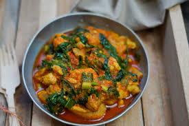

Ayam Woku berasal dari Manado, Sulawesi Utara. Kata "woku" dalam bahasa Minahasa berarti "diremas" atau "dihancurkan," mencerminkan proses pengolahan bumbu-bumbu segar dan rempah-rempah yang dihancurkan dan diolah bersama untuk menciptakan cita rasa yang khas.